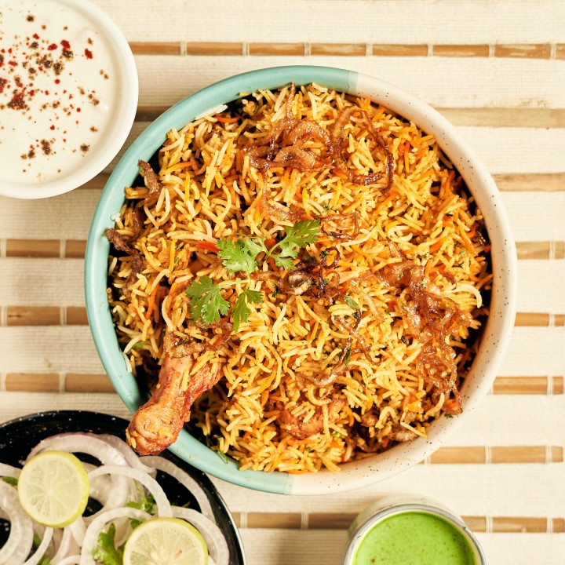

Hyderabadi Biryani
Ingredients:
- Basmati rice - 2 cups (soaked for 30 minutes)
- Chicken - 500 grams (cut into pieces)
- Onions - 2 large (sliced)
- Tomatoes - 2 medium (chopped)
- Green chilies - 4 to 5 (slit)
- Yogurt - 1/2 cup
- Ginger-garlic paste - 2 tablespoons
- Mint leaves - a handful (chopped)
- Cilantro (coriander leaves) - a handful (chopped)
- Lemon juice - 2 tablespoons
- Ghee - 4 tablespoons
- Whole spices (cinnamon, cloves, cardamom) - 4 to 5 each
- Red chili powder - 1 teaspoon
- Turmeric powder - 1/2 teaspoon
- Biryani masala - 2 teaspoons
- Salt - to taste
- Saffron strands - a pinch (soaked in warm milk)
- Fried onions (birista) - for garnishing
- Water - as required

Recipe:
- Heat ghee in a large pan or pressure cooker.
- Add the whole spices and sauté until fragrant.
- Add sliced onions and fry until golden brown.
- Add ginger-garlic paste and green chilies. Sauté until the raw smell disappears.
- Add chopped tomatoes and cook until they turn soft.
- Add chicken pieces, red chili powder, turmeric powder, and salt. Mix well and cook for a few minutes.
- Add yogurt, biryani masala, chopped mint leaves, chopped cilantro, and lemon juice. Mix well.
- Add soaked basmati rice and saffron-infused milk. Mix gently.
- Add water in the ratio of 1:2 (rice to water) and stir gently.
- Cover and cook on low heat until the rice and chicken are cooked through.
- Once done, fluff the biryani gently with a fork.
- Garnish with fried onions and chopped cilantro.
- Serve hot with raita or salan. Enjoy your Hyderabadi Biryani!